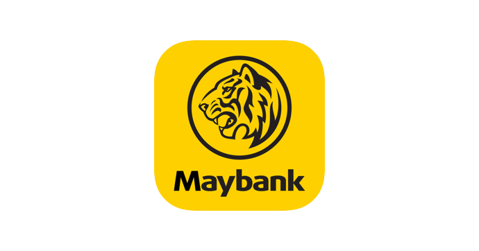

Donation Can Be Made As Details Below
Donations of crossed checks payable to 'Orphan Foundation PTTD' can be sent by mail or enter into Maybank account (CPI Branch Jalan Tun Mohd Fuad, Taman Tun Dr Ismail, Kuala Lumpur)on account of the same name.

YAYASAN RUMAH ANAK-ANAK YATIM RUMAH ILHAM TTDI
5648-0100-0065
5648-0100-0065
Contact Us